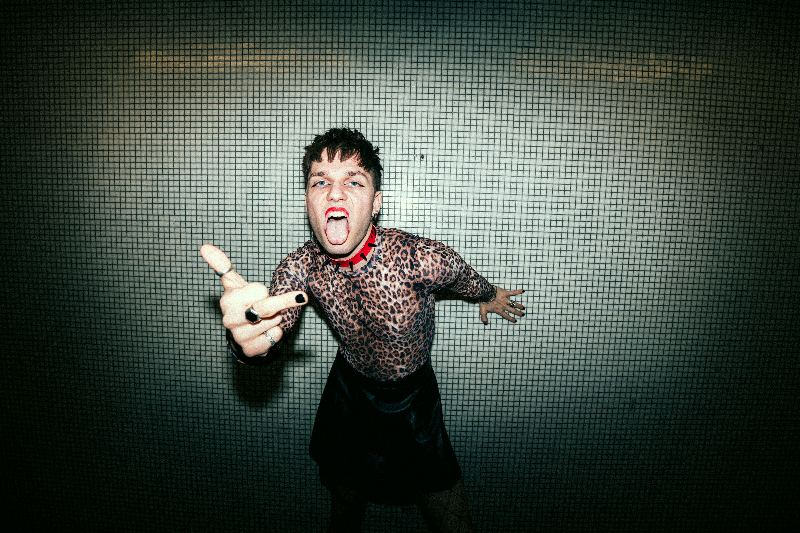

Über
Krankenschwester ist das queere Kind von Punk und Pop, aufgewachsen zwischen Berliner Clubklo und Konzertbühne.
Mit klarer linker und feministischer Haltung macht KRANKENSCHWESTER Musik gegen Faschismus, Heteronormativität und toxische Männlichkeit.
Die Songs sind laut, direkt und unbequem. Und zugleich ein Liebesbrief an alle, die sich jemals zu laut, zu anders oder zu queer gefühlt haben.
Mukke
Schon draußen
Live
Fotos
Klick öffnet die große Fassung. Pressefotos in voller Auflösung auf Anfrage.
Kontakt
Booking, Presse, Kollabo: direkt schreiben, es antwortet ein Mensch.